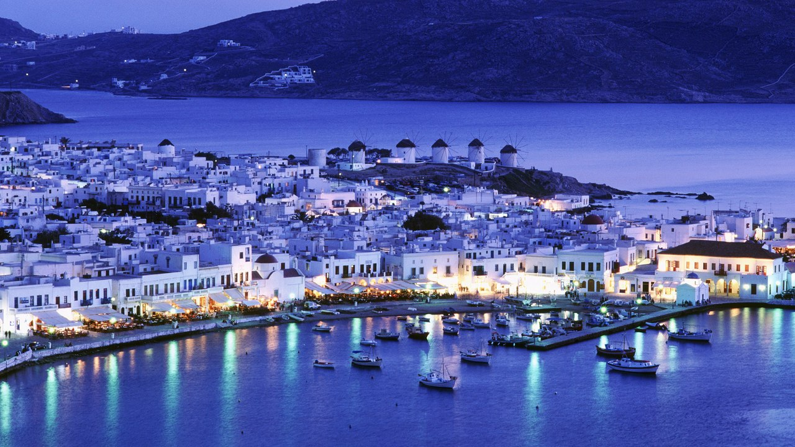
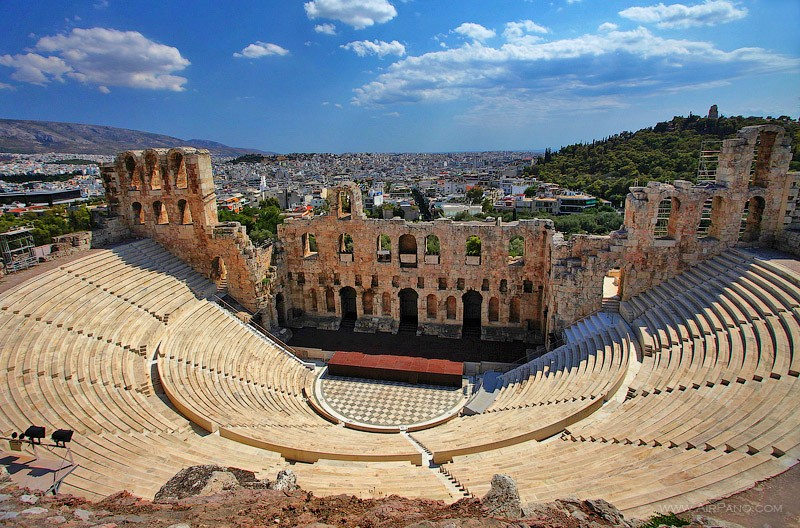
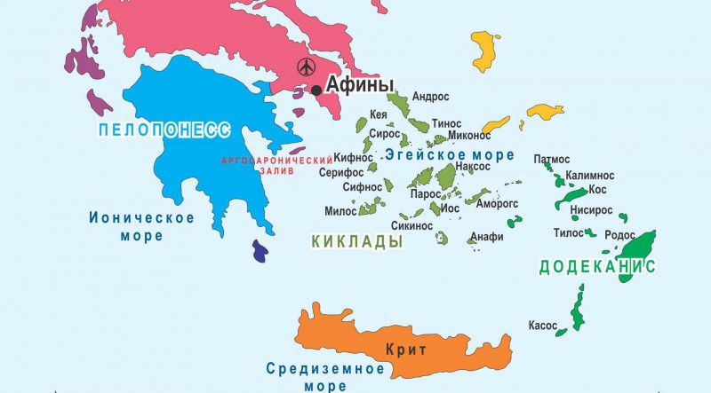

Греция
Австрия
О стране
Что посмотреть
Географические сведения

О странеНаилучший выбор для сочетания отдыха на далеком острове с незабываемыми экскурсиями – это остров Крит, колыбель одной из древних цивилизаций: минойской, зародившейся здесь более 2,5 тыс. лет до н.э. и погибшей, как считается, в результате извержения вулкана. Здесь же, на Крите, по преданию, родился и царь богов Зевс. Туристы всего мира хорошо знают остров Корфу – самый известный из Ионических островов. На этом острове можно легко сочетать безмятежный отдых с напряженным ритмом ночной жизни. Не уступает по известности и популярности остров Родос – самый большой из Додеканских островов, занимающий первое место в Греции по числу солнечных дней в году.
Греция – это музей под открытым небом. Знаменитый полуостров Халкидики, напоминающий трезубец, пронзающий Эгею, вдается в Эгейское море на 120 км. По древним мифам, здесь обитали титаны – соперники богов. В битве с ними бог моря Посейдон потерял свой трезубец: так возник полуостров Халкидики. А великан Афон в ярости швырнул в богов огромную глыбу – теперь это святая гора Афон. Путешествуя по полуострову, можно совершить экскурсии в Метеору с ее древними монастырями; Салоники – второй по величине город Греции, столицу северной Греции; совершить круиз по кристально чистому заливу Торонес, паломником взойти на Святую гору в Афоне. Вы будете поражены фантастической природой Ситонии, узнаете много интересного о традициях и жизни местных жителей. На Аттической равнине, расположен город, равных которому нет на свете. Это Афины – центр целого мира, центр великой цивилизации, подарившей жизнь всему человечеству. В Афинах сосредоточено все. Это город Олимпийской идеи, город искусства, культурный и научный центр, это Восток и Запад для каждого путешественника.Сегодня, как и в античные времена, Акрополь – это эмблема Афин и Греции. Аттика неповторима в своей красоте – возможность посетить Дельфы, Аргос, осмотреть Коринфский канал, посетить Львиные ворота, гробницы и дворец Агамемнона, на мысе Сунион храмы Посейдона и Афины, в Бравроне храм Артемиды и многое другое.
Что посмотреть
Наиболее популярные города:
- Афины;
- Крит;
- Родос;
- Кос.
Самые известные музеи:
- национальный археологический музей;
- Византийский музей;
- музей Акрополиса в Афинах.
Большинство музеев Греции имеет богатые коллекции античных экспонатов.
Старый Археологический музей в Олимпии имеет самую крупную в мире коллекцию древнегреческих геометрических и архаических экспонатов; Археологический музей в Кандии на острове Крит содержит великолепную коллекцию предметов искусства эпохи Минойской цивилизации. Национальная художественная галерея. Музей Александра Сутзоса и Музей Бенаки в Афинах содержат экспонаты более поздних эпох.
Среди других достопримечательностей – знаменитый Акрополис с многочисленными античными храмами в Афинах. В Родосе – дворец Великих магистров рыцарей ордена св. Иоанна Иерусалимского. Неподалеку – развалины античного Родоса, основанного в 408 году до н.э. В нем находилась знаменитая статуя Колосса Родосского (одно из чудес света). В Ираклионе – несколько греческих и армянских церквей. На Крите – развалины города Кноссос, где, согласно преданию, находился знаменитый Лабиринт с Минотавром. Город был основан в 1700 году до н.э. В Салониках – множество зданий византийской эпохи; базилика св. Елены и церковь св. Георгия с мозаичными иконами. Белая (Кровавая) башня. Салоники – город, где проповедовал св. апостол Павел.
Географические сведения
Страна на юго-востоке Европы, занимающая южную оконечность Балканского полуострова и большое количество островов Эгейского, Ионического и Средиземного морей. На северо-западе граничит с Албанией, на севере с бывшей Югославской Республикой Македония и Болгарией,на севере-востоке с Турцией. На востоке омывается Эгейским морем, на юге - Средиземным морем, на западе – Ионическим морем. Площадь страны 131 957 км2, около одной пятой территории занимают острова.
Крупнейшие острова:
- Крит;
- Икария;
- Лемнос;
- Лесбос;
- Самое;
- Кефалиния;
- Лефкас;
- Родос;
- Корфу;
- Тасос;
- Самотракс;
- острова Северной Спорады;
- острова Киклады.
Наиболее важные физико-географические регионы:
- центральные горы;
- центральная Греция;
- гористый регион на западе;
- солнечные долины и горные хребты Фессалии, Македонии и Фракии;
- горный регион Пелопоннеса;
- острова, большинство из которых находится в Эгейском море.
Население страны (по оценке на 1998 год) составляет около 10 662 100 человек, средняя плотность населения около 81 человека на км.
Этнические группы:
- греки – 98%;
- турки – 1%;
- албанцы, армяне, валахи.
Язык: греческий (государственный), который подразделяется на демотике (разговорный) и катаревуса
(формальный); причем государственным согласно закону 1976 года является демотике; английский, французский.
Вероисповедание: греческая православная
церковь – 98%, католики, протестанты, иудеи, мусульмане.
Столица – Афины.
| Крупнейшие города: | |
| Афины | 3 693 тыс. чел. |
| Фессалоники | 378 тыс. чел. |
| Пирей | 170 тыс. чел. |
| Пелопоннес | 155 тыс. чел. |
| Ираклион | 117 тыс. чел. |
| Лариса | 113 тыс. чел. |
Государственное устройство – республика. Глава государства – президент Кос-тис Стефанопулос (в должности с марта 1995 года).
Глава правительства – премьер-министр Костас Симитис (в должности с января 1996 года).
Денежная единица – драхма.
Климат страны средиземноморский. В долинах лето жаркое и сухое, зима – дождливая. Морозы в долинах крайне редки, однако вершины гор зимой покрыты снегом. Среднегодовая температура в Афинах около 17° С. Самый холодный месяц – январь (-0,6° С), самый жаркий – июль (37° С).
Растительность Греции весьма разнообразна и меняется в зависимости от высоты над уровнем моря.
От прибрежных районов до высоты около 460 м располагаются:
- оливковое дерево;
- апельсин;
- финиковая пальма;
- гранат;
- фига;
- хлопок;
- табак.
От 120 до 460 м растут вечнозеленые и лиственные леса:
- дуб;
- черная ель;
- орех;
- бук;
- сумах.
Выше растут в основном хвойные леса. И такие дикие цветы, как анемоны и цикламены.
Среди представителей фауны:
- дикий кабан;
- европейский медведь;
- рысь;
- шакал;
- олень;
- лиса;
- серна;
- куница.
В том числе, среди птиц:
- ястреб;
- пеликан;
- фазан;
- куропатка;
- соловей;
- аист;
- цапля;
- горлица.
©Site by Kolupaev Studio